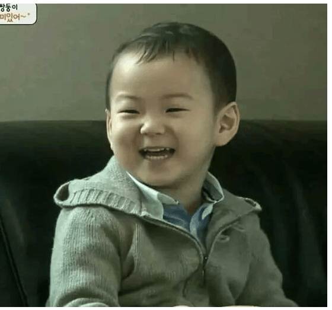

‘<!doctype html>
<html>
<head>
<meta charset="utf-8">
<title>无标题文档</title>
</head>
<body background="images/u=484491329,33833112&fm=26&gp=0.jpg">
我的个人网站——首页内容
<h1><align="center">基本信息<br/>
</h1>
<p><a href="index.html">首页</a> 
<a href="about.html">关于我</a> 
<a href="diary.html">日志</a>
<a href="works.html">作品</a>
<a href="photo.html">相册</a>
<a href="contact.html">联系</a></p>
 <h3></h3>
<h3>出生地：陕西</h3>
<h3>出生年月：2000.07</h3>
<h3>就读学校：浙江传媒学院</h3>
<h3>专业：软件工程</h3>
<h3>最喜欢的事：看书、听歌（EDM）</h3>
<h5>我是一个诗人！！！随口便可吟来：“将进酒，杯莫停，呼儿将出换美酒。”</h5>


<body>
</body>
</html>
